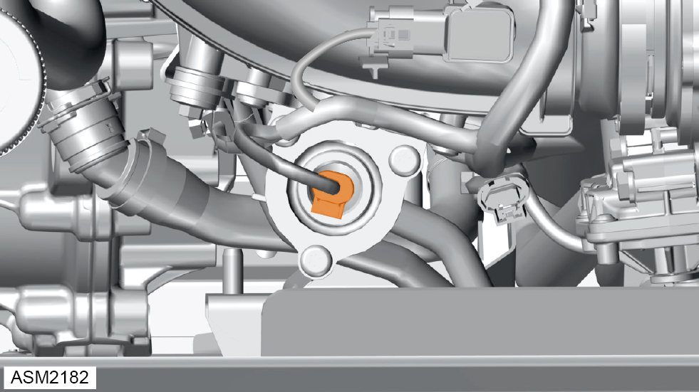
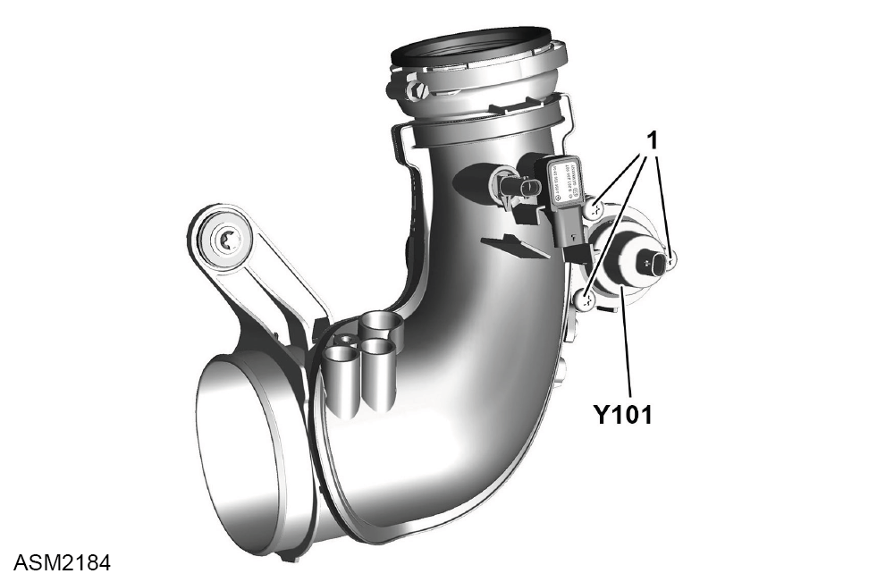

Solenoid Valve - 4 Cylinder
Print
Operation Code: 46.10.10-02
Removal
- Remove engine cover. Refer to procedure.

- Disconnect harness connector from solenoid valve.

- Remove M6 bolts (1) (x3) securing solenoid valve (Y101) to air intake pipe. Torque 9 Nm.
- Remove solenoid valve.
NOTE: Plug air intake pipe to prevent ingress of dirt.
Installation
- Installation is the reverse of removal procedure except for the following:
- After installation perform a diagnostic read and clear error memory using Lotus Insight tool.